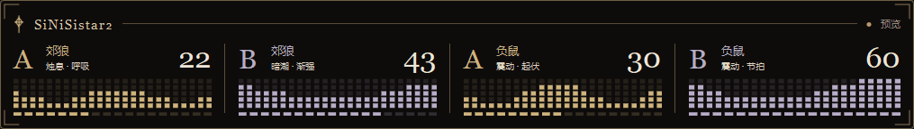

受伤与战败反馈
按受伤、异常和已验证的战败流程设置强度、波形与时长。
WINDOWS · DG-LAB V3 / V4 · PULSE / OPOSSUM
将受伤、异常状态和战败流程同步到郊狼与负鼠。独立设置通道、强度、波形与时长。
Pulse / 负鼠 A/B · 独立数值与信号格

01 / FEATURES
按受伤、异常和已验证的战败流程设置强度、波形与时长。
支持郊狼与负鼠；两种设备及 A/B 通道独立配置。
快速选择档位，或分别调整强度、上限和反馈时长。
拖绘波形，预览预设，支持撤销、重做和自定义保存。
显示 Pulse / 负鼠 A/B 输出，位置、缩放和透明度可调。
独立设置 CG 反馈和分段波形的顺序、强度与时长。
查看 HP / MP、当前异常和游戏事件，支持独立窗口。
默认 Ctrl+F12，归零并锁定两路输出；支持自定义按键。
02 / GAMEPLAY
点击截图可放大查看。
03 / INTERFACE
点击截图可放大查看。
04 / SETUP
下载 Windows ZIP，完整解压后运行 SiNiSistar2-x-DGlab.exe，无需安装 Python。
在「设备与游戏」选择 v1.3.1 游戏目录，安装联动插件后启动游戏。
手机与电脑接入同一局域网，选择 V3 / V4 扫码，确认设备、预设与上限。
需要 Windows x64 与自己的 SiNiSistar2 v1.3.1。安装插件前退出游戏；连接后按软件内五步教程设置。
05 / DOWNLOAD
完整解压后双击 EXE 即可运行，BepInEx 与观察插件安装资源已包含，无需另装 Python。
免安装包不含游戏本体或用户个人配置。升级时先关闭旧控制中心；插件更新前请退出游戏。
SiNiSistar2-x-DGlab-1.0.2-windows-x64.zip · 114.4 MiB
SHA-256: 6f2e5694d36369087bc4321a1e787dcf00190ccfb57c68fc3c8f8e6e31f1b92406 / SUPPORT
开发动态与版本更新
QQ群：1129729751
赞赏码
点击二维码可放大查看。